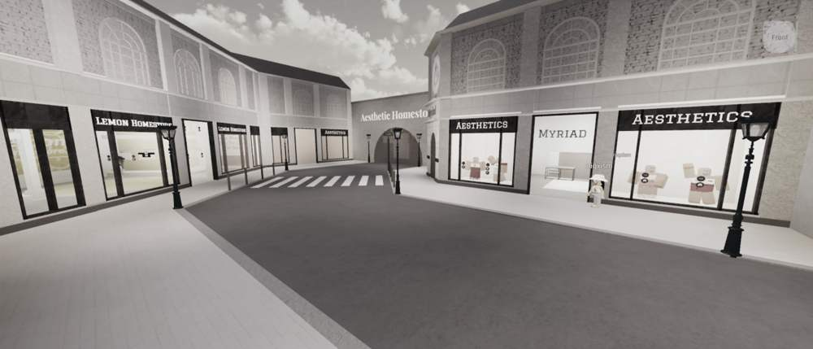
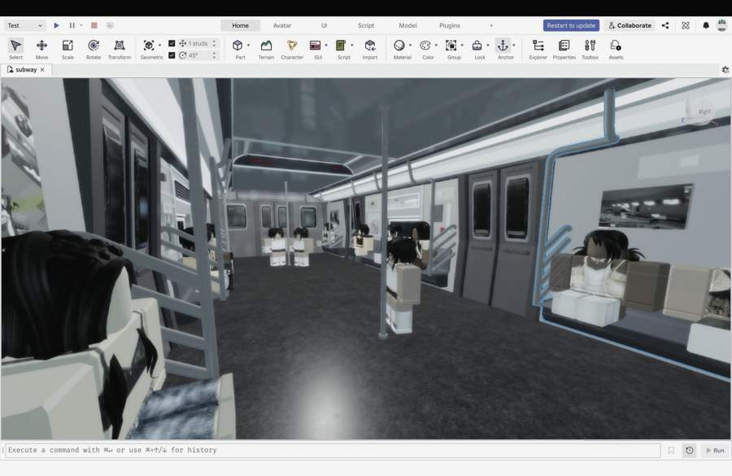
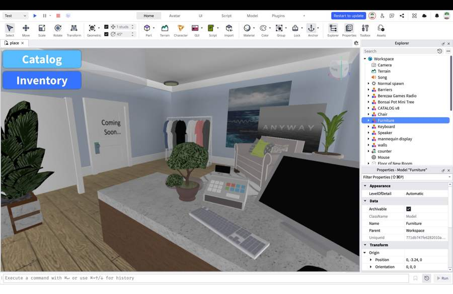
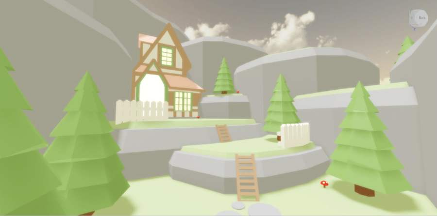
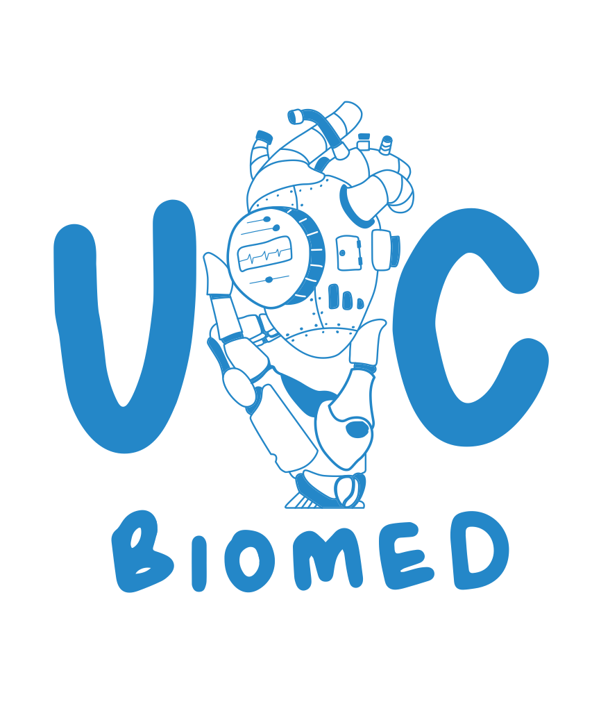
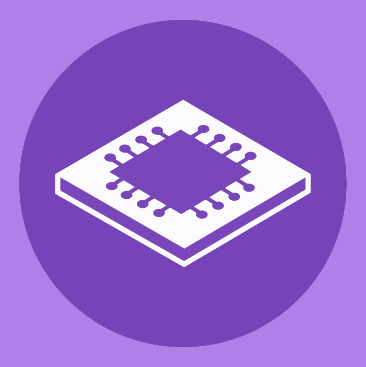

ADMIT ONE
Startup & Venture Events
Ice House Ventures · NZ Young Entrepreneurs · founder panels
I'm a second-year Mechatronics Engineering student at the University of Canterbury, interested in the space where engineering meets people, systems, and real-world problem solving.
Alongside my degree I put myself in rooms where people are building — engineering communities, innovation and entrepreneurship spaces. Currently seeking internships across engineering, product, and technical-commercial environments.

Between 13 and 16 I built and ran a full creative and commercial operation inside Roblox — 3D environments, clothing design, multi-client advertising, commission management. I didn't know what any of it was called. I let my curiosity lead me.

Subway build · age 15
Roblox Studio · age 11Started building 3D environments in Roblox Studio. Coded very basic Lua scripts to make things actually work, learned to make the most out of what already existed.
The outcomes of lockdown. Built a Paris-themed shopping district with multiple storefronts and interiors. Started designing 2D clothing in Paint.NET — layers, shading, templates — and teaching myself Blender for small personal projects.

Commissioned builds · age 15GLXW brought me on as a weekly designer, paid per piece. Took ad commissions on the side, built a commission queue so clients could see their status, and documented the whole process on YouTube — thousands of views, comments still arriving. All while running school and two part-time jobs.
For a long time I thought I was just making things on the internet. Turns out I was learning how I think — and I've been thinking that way ever since.

Helping coordinate events, initiatives, and operations that support student engagement within the biomedical engineering community.
LinkedIn ↗
Supporting student engagement, events, and community-building within the Mechatronics Engineering cohort.
LinkedIn ↗